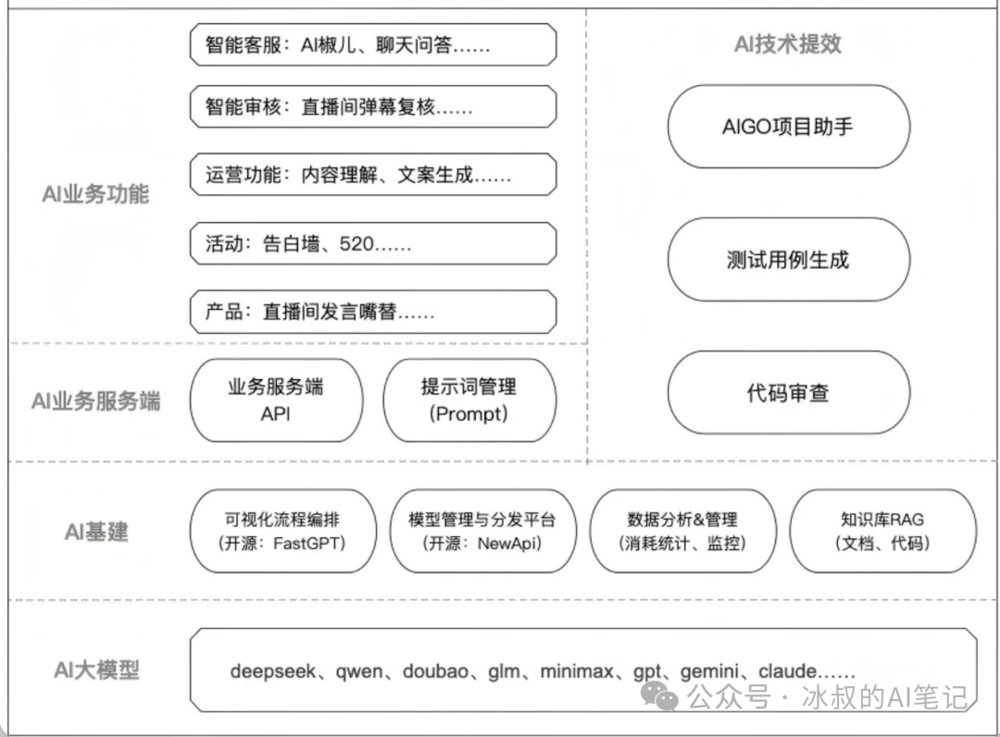
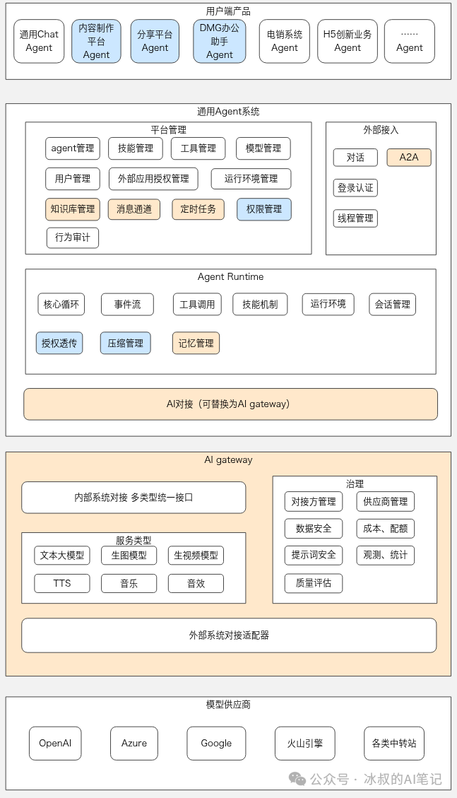
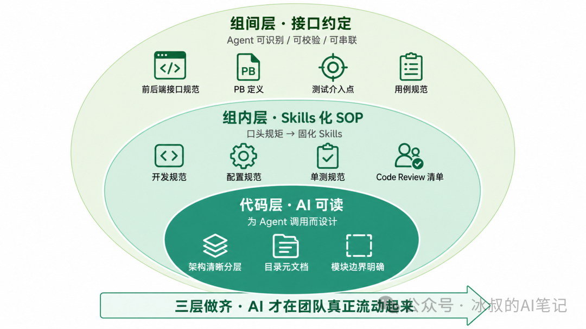
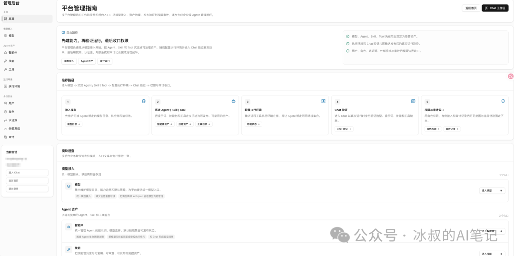
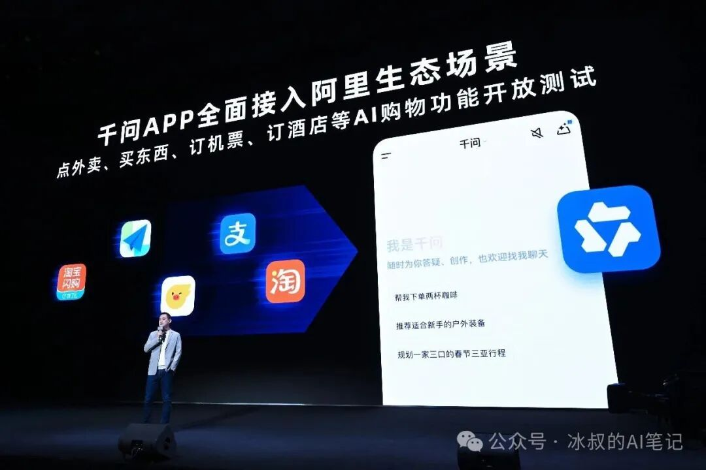
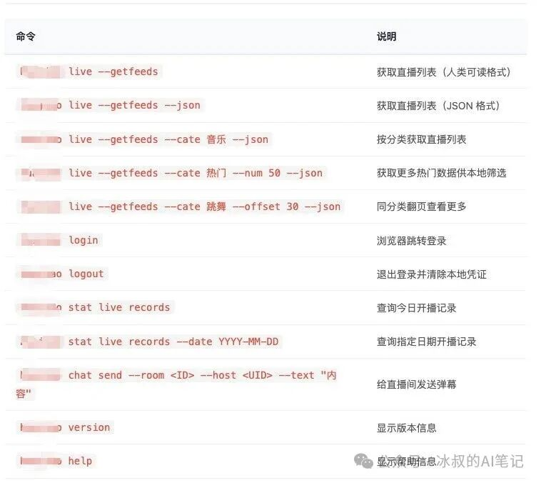
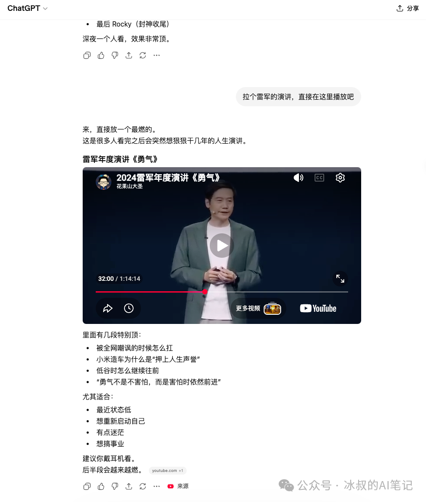
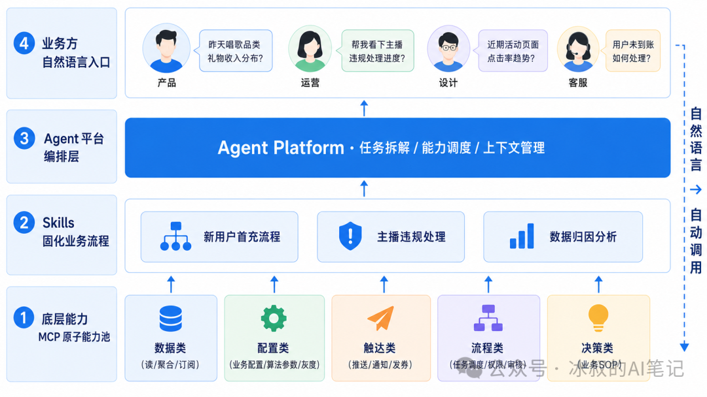
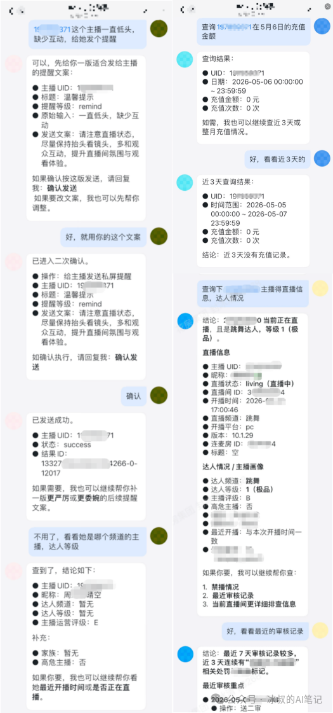

💡 从LLM+RAG到Agent：我们团队这一年的AI探索
From LLM+RAG to Agent: Our team's year of AI exploration
现在大部分公司affiliate[əˈfɪliˌeɪt] n. 附属机构， 分公司谈AI落地，还停在"哪个业务能嵌一个模型进去"。我们25年也是这么做的。
那时候做AI的主流玩法就是LLM+RAG+Workflow——把模型能力capability[ˌkeɪpəˈbɪləti] n. 能力嵌进业务的某个点，外面再套一个工程化的工作流去编排。我们ToC端做了直播AI助手、活动个性化、内容理解absorb[əbˈzɔrb] v. 吸收；吸引；承受；理解；使…全神贯注、文案生成；内部做了代码审查、AIGO开发助手ally[ˈælaɪ] n. 同盟国；伙伴；同盟者；助手、测试用例生成平台。一年下来descend[dɪˈsɛnd] v. 下降；下去；下来；遗传；屈尊，十几个AI项目，每一个单看都跑通了。

但我们越做越发现一件事：AI真正的authentic[əˈθɛnɪk] adj. 真正的，真实的；可信的难点，从来不在"能不能用上"，而在能不能跑通整条工作流。
转折点hinge[hɪnʤ] n. 铰链，折叶；关键，转折点；枢要，中枢出现在24年底到25年。Anthropic在24年11月发布MCP，把"模型怎么调用外部工具"这件事从各家自己写一套，统一成了一个开放协议accord[əˈkɔrd] n. 一致， 符合；协议， 条约；25年下半年，Anthropic的Agent Skills又把"模型怎么调用一段固化流程"标准化normalization[ˌnɔrməlɪˈzeɪʃən] n. 正常化；标准化；正规化；常态化了；同期，业界对Agent Harness的讨论也在收敛——大家越来越意识到alert[əˈlərt] v. 警告；使警觉，使意识到，Agent的真正能力，不光取决于底层模型，更取决于外面那一层"模型 + 工具 + 上下文 + 控制流"的工程框架。
这套东西clay[kleɪ] n. [土壤] 粘土；泥土；肉体；似黏土的东西凑齐之后，路就变了。AI从"调一次模型解决一个问题"，变成可以"作为一整套体系化的工作流去运转behave[bɪˈheɪv] v. 表现；（机器等）运转；举止端正；（事物）起某种作用"。技术technique[tɛkˈnik] n. 技巧，手艺，工艺；技能，技术迭代到这里，我们也跟着变。

但真正改路之后才发现：要改的东西disguise[dɪsˈgaɪz] n. 伪装；假装；用作伪装的东西，比想象的多得多。不是把RAG替换成Agent这么简单，整个研发组织的organic[ɔrˈgænɪk] adj. [有化] 有机的；组织的；器官的；根本的协作方式、产品形态、甚至公司内部"人怎么找技术干活"的范式，都要跟着重做。
市面上现在presently[ˈprɛzəntli] adv. 一会儿,不久；现在,目前都在喊"AI全栈"。但大部分bulk[bəlk] n. 体积，容量；大多数，大部分；大块人理解的"全栈"是技术栈意义上的全——前端、后端、数据、模型一把梭。我理解comprehend[ˌkɑmpriˈhɛnd] v. 理解；包含；由…组成的AI全栈完全不是这个意思。AI全栈是把技术周围circumference[ˌsərˈkəmfrəns] n. 圆周,周围所有上下游环节，全部变成AI可协作的形态。代码要AI可读，PRD要AI可解析，运营SOP要Skill化，产品入口entrance[ˈɛntrəns] n. 入口；进入要CLI化——任何一环没AI化，整条链路就断在那一环。
这也是为什么"AI全栈"这个词，现在只有博主和卖焦虑的anxious[ˈæŋʃəs] adj. 焦虑的；担忧的；渴望的；急切的人在喊，但大公司、企业里真正落地反而"特别难"——不是技术难，是要改的不只是技术，是上下游每一个角色的工作方式。这中间巨大的enormous[ɪˈnɔrmɪs] adj. 庞大的，巨大的；凶暴的，极恶的信息差，才是真正的门槛。
这一年的认知变化，和接下来要做的几件事，今天一次讲清楚clarity[ˈklærəti] n. 清楚，明晰；透明。
这是我们去年投入最大的一块，也是今年认知cognition[kɒɡˈnɪʃn] n. 认知迭代最多的一块。
去年我们把AI Coding推到了每个技术组：前端、服务端、安卓、iOS、PC、测试。Cursor、Codex、Copilot都在用，每个工程师都有自己的偏好，每个组也都跑出了自己的"用法usage[ˈjusɪʤ] n. 使用；用法；惯例"。一轮下来再看数据，每个组单独看都提效了，但整体没提效。
这个结论一开始commence[kəˈmɛns] v. 开始我自己都不信。复盘几轮之后才看清楚，问题不在工具，而在工程基础设施infrastructure[ˈɪnfrəstrʌktʃə] n. 基础设施；公共建设；下部构造和工作流。
第一个问题：每个人对AI Coding的边界boundary[ˈbaʊndəri] n. 边界；范围；分界线认知不一样
同一个组里，有人只用AI做代码补全，有人用它写小工具脚本，有人敢把整个altogether[ˌɔltəˈgɛðər] n. 整个；裸体新模块整块交给它。
这背后是没有一个团队统一的"AI使用分级classification[ˌklæsəfəˈkeɪʃən] n. 分类,分级"——什么场景下AI是辅助、什么场景下AI是主力、什么场景下必须人工把关。每个工程师靠自己的经验摸索，产出质量参差不齐，也没有任何沉淀可以传给后来的subsequent[ˈsəbsəkwənt] adj. 随后的,后来的人。Token花得多不多、生成代码的Bug率高不高、和原有代码的风格一致不一致contradiction[ˌkɑntrəˈdɪkʃən] n. 矛盾，不一致；反驳，否认——这些数据没人统一收，也没人统一看。
工具铺下去了，但用法没有形成formation[fɔrˈmeɪʃən] n. 形成;构成;组织;构造;编制;塑造团队级的工程规范。
第二个问题：老项目对AI根本不友好alienate[ˈeɪljəˌneɪt] vt. 使疏远， 使格格不入；使不友好； 离间
我们有些线上服务是一个文件就2万行以上的老代码，没文档、命名随意、目录catalog[ˈkætəlɔg] n. （ue）目录(册)结构是十年沉淀下来的"屎山代码"。AI一上来先猜半天，光是建立项目认知就要烧掉上百万Token，结果给出的修改amend[əˈmɛnd] v. 修改；改善，改进还经常踩到隐式约定。
这不是模型能力faculty[ˈfækəlti] n. 科，系；能力；全体教员的问题，是代码本身就不是给AI读的。
人读代码是局部的、有经验补全的——一个老工程师扫一眼变量名就知道acquaintance[əkˈweɪntəns] n. 熟人；相识；了解；知道这是哪个业务的；AI读代码是全局的、需要明确上下文的——它要靠注释、文档、目录catalogue[ˈkætəˌlɔg] n. 目录结构、模块边界来定位。这两种"读法"完全不一样，对代码组织apparatus[ˌæpərˈætəs] n. 器械，器具，仪器；机构，组织的要求也不一样。
国外这两年开始流行一个工程概念conception[kənˈsɛpʃən] n. 概念， 观念；设想， 构想叫"Agent Harness"——大意是Agent的能力 = 模型能力 + 工程框架。同样的Claude，跑在Claude Code里、跑在Cursor里、跑在通用ReAct框架里，能力差异discrepancy[dɪˈskrɛpənsi] n. 差异,不符巨大，差异的来源就是Harness。这个概念construct[ˈkɑnstrəkt] n. 构想，概念延伸到代码本身就是：代码也要为Agent调用而设计，不是只为人阅读而设计。
老代码要重构、要补文档、要拆模块module[ˈmɒdjuːl] n. 单元；组件,模块,模件；(航天器的)舱，不是为了"代码更优雅"，是为了让AI能高效地参与进来。
第三个问题：开发exploit[ˌɛkˈsplɔɪt] v. 开发，开拓；剥削；开采只是工作流的一环
开发再快，前后端联调还是瓶颈bottleneck[ˈbɒtlnek] n. 瓶颈，测试介入还是瓶颈，发布还是瓶颈。团队也没有统一的SOP——怎么写接口、怎么定pb、单测覆盖blanket[ˈblæŋkɪt] v. 覆盖，掩盖；用毯覆盖率底线是多少、提测前要做哪些自检——每个人心里一把尺子，AI就更对不齐了。
工程效能的瓶颈一旦从"开发速度"转移avert[əˈvərt] v. 防止，避免；转移(目光、注意力等)到"协作摩擦"，AI Coding单点提效就触顶了。
AI Coding完整integral[ˈɪnəgrəl] n. 积分；部分；完整形态：三层规范同时立起来
这三个问题逼着我们重新定义AI Coding。它不是"让每个工程师用上Cursor"，而是一整套覆盖clothing[ˈkloʊðɪŋ] v. 覆盖（clothe的ing形式）；给…穿衣代码、组内、组间的工程基础设施重建：
第一层，代码本身要AI可读。老项目重构、清晰的plain[pleɪn] adj. 平的；简单的；朴素的；清晰的架构分层、每个目录和模块都要有给Agent定位用的元文档。这层文档不是写给人看的README，是给Agent建立constitute[ˈkɑnstəˌtut] v. 组成，构成；建立；任命项目上下文的索引。
第二层，组内要有沉淀deposit[dɪˈpɑzət] v. 存放；使沉淀成Skills的SOP。怎么开发、怎么做配置、单测怎么写、提测流程是什么、Code Review的检查清单是什么——这些以前靠老员工带新人的"口头规矩"，全部要固化成Skills，让AI调用时有约束constraint[kənˈstreɪnt] n. 约束、有标准、有可复用的最佳实践。
第三层，组间要有清晰的接口约定appoint[əˈpɔɪnt] v. 任命；指定；约定。立项阶段就要定好前后端接口规范、pb定义、测试介入intervene[ˌɪntərˈvin] v. (in)干涉,干预;插入,介入点、用例规范。这些以前是流程文档，现在要变成Agent可以识别discern[dɪˈsərn] v. 识别；领悟，认识、可以校验、可以串联调用的结构化规范。
三层做齐，AI才真正在团队里"流动foam[foʊm] v. 起泡沫；吐白沫；起着泡沫流动"起来。整体提效不是靠单点工具叠加，是靠工程基础设施establishment[ɪˈstæblɪʃmənt] n. 确立，制定；公司；设施的重建。

这套基础设施目前只完成accomplish[əˈkɑmplɪʃ] v. 完成；实现；达到了一部分：代码层的元文档体系还在补齐，组内Skills化的覆盖率不到三成，组间结构化接口约定刚立项。AI Coding的下一阶段，不再是工具gear[gɪr] n. 齿轮；装置，工具；传动装置采纳率，而是工程基础设施的成熟度。
AI Coding的三层规范norm[nɔrm] n. 标准，规范还在落地，第二堵墙已经摆在面前——技术团队的AI化只是起点，整个公司没办法跟上同样的节奏。
这两件事必须同步推进，不能等AI Coding做完再启动activate[ˈæktəˌveɪt] v. 启动，激活；驱动，驱使；使开始起作用组织改造。技术这端把代码、Skills、接口规范一层层立起来的同时，前置链路上的断点也在持续放大amplify[ˈæmpləˌfaɪ] v. 放大，扩大；增强；详述：PRD写出来，AI得靠人解读一遍才能用；设计contrive[kənˈtraɪv] v. 设计；发明；图谋稿交付，还是要人肉翻译成开发语言；运营每次问AI分析analyze[ˈænəˌlaɪz] vt. 分析； 分解数据，都得重新讲一遍项目背景。技术这端再快，前置链路全是断点，整体效率efficiency[ɪˈfɪʃnsi] n. 效率；功效依旧被卡在最慢的那一环。
为什么不能复制clone[kloʊn] v. 无性繁殖，复制技术团队的做法？
技术人用AI有个天然优势superiority[ˌsupɪriˈɔrɪti] n. 优越，优势；优越性——我们能装Cursor、Codex、Claude Code，懂什么是MCP、什么是RAG、什么是Skills、什么是上下文窗口。装完工具implement[ˈɪmpləmənt] n. 工具，器具；手段读完文档，两天就上手了。
但公司里大部分highlight[ˈhaɪˌlaɪt] n. 最精彩的部分人不是技术背景。让产品经理理解什么是MCP、让运营搞懂Skills怎么写、让设计师architect[ˈɑrkəˌtɛkt] n. 建筑师；设计师；缔造者；创造者配置RAG向量库——这不是教学问题，是门槛问题。即使你愿意手把手教，业务方也没有动机花一周时间去学一套和他工作日weekday[ˈwikˌdeɪ] n. 平日，普通日；工作日常完全脱节的技术栈。
技术团队的做法没法直接复制duplicate[ˈdupləˌkeɪt] v. 复制；使加倍到组织。我们需要的不是让所有人holder[ˈhoʊldər] n. 持有人；所有人；固定器；（台、架等）支持物变成"懂AI的人"，而是让AI变成"所有人都能用的工具"。
我们今年的主线是构建一个公司级的Agent平台——技术团队把所有AI工程化能力全部收口、抽象、封装encapsulate[ɪnˈkæpsjuleɪt] v. 封装，业务方在这个平台上只用"业务语言"配置自己的Agent。
平台底层屏蔽掉的部分installment[ˌɪnˈstɔlmənt] n. 安装；分期付款；部分；就职：
模型层：LLM调用、模型选型、Token成本控制clutch[kləʧ] n. 离合器；控制；手；紧急关头、响应缓存、降级策略
会话层：会话管理administer[ədˈmɪnɪstər] v. 管理；执行；给予、上下文管理、长期记忆、用户画像注入
能力层：Skills管理govern[ˈgəvərn] v. 管理；支配；统治；控制、MCP工具管理、RAG知识库管理
基础设施层：授权认证、权限控制、审计audit[ˈɔdɪt] v. 审计；[审计] 查账日志、调用追踪、灰度发布
业务方在平台上看到和操作的operational[ˌɑpərˈeɪʃənəl] adj. 操作的；运作的部分：
一个可视化的Agent配置界面interface[ˈɪnərˌfeɪs] n. 界面；计接口；交界面，所见即所得
按自己部门原有的业务SOP，把流程拆成Skills、配置触发条件qualification[kˌwɑləfəˈkeɪʃən] n. 资格；条件；限制；赋予资格
调用平台已经封装好的工具集，不需要entail[ɛnˈteɪl] v. 使需要，必需；承担；遗传给；蕴含写代码
把搭好的Agent固化成部门的标准criterion[kraɪˈtɪriən] n. (pl.criteria或s)标准，尺度流程，团队内统一调用

平台搭起来之后，各角色的AI化路径就清晰了：
产品：PRD结构化输出（md + 产品约束curb[kərb] n. 路边；控制，约束词表 + 功能矩阵），AI可以直接读、直接解析、直接生成测试用例草稿、直接派发给后端Agent去做接口设计
设计：原型图带层级标注和组件语义，AI可以识别页面结构，驱动UI自动auto[ˈɔtoʊ] n. 汽车（等于automobile）；自动初版生成
运营：基于已结构化的PRD和实时数据，AI直接做归因分析和趋势判断，不需要每次重新解释define[dɪˈfaɪn] v. 确定，说明，界定；给…下定义，解释项目背景
客服、审核、内容运营：各自原有的SOP直接Skill化，变成Agent的固定工作流，业务方调整adjust[əˈʤəst] v. 调整，使…适合；校准流程不再依赖技术排期
技术团队的角色从"自己用AI"，转向diversion[dɪˈvərʒən] n. 转向,转移搭建整个公司用的AI基础设施。这是一个非常底层的underneath[ˌəndərˈniθ] adj. 下面的；底层的视角转换：技术不再是"用AI的人之一"，而是让所有人能用AI的那个团队。
Agent平台的本质是把AI工程能力做成面向全公司的中台——把模型层、会话层、能力层、基础设施层全部下沉收口，让业务方在零代码门槛上完成attain[əˈteɪn] v. 完成；获得；达到Agent的配置、调试、上线。这是组织fabric[ˈfæbrɪk] n. 织物；布；组织；构造；建筑物级AI化的关键基础设施。
内外部都AI化了，还剩一个问题——我们给用户用的产品，还是老样子aspect[ˈæspekt] n. (问题等的)方面；样子, 外表, 面貌。
这件事在25到26年特别明显。25年豆包推出AI手机，26年初千问APP联手淘宝闪购，字节、阿里这些巨头已经在下注一件事：未来产品的入口inlet[ˈɪnˌlɛt] n. 入口，进口；插入物；水湾，就是AI。

判断diagnose[ˌdaɪəgˈnoʊs] v. 诊断(疾病)；判断(问题)：APP这个形态，可能走到尽头了
不是说APP明天就没了，但方向orientation[ˌɔriɛnˈteɪʃən] n. 方向；定向；适应；情况介绍；向东方已经在变。以前用户要什么——打开手机、找APP、点按钮、搜索、选结果consequence[ˈkɑnsəkwəns] n. 结果,后果,影响，入口是APP。未来用户要什么——对着AI说一句"我想看唱歌主播anchor[ˈæŋkər] n. 锚；抛锚停泊；靠山；新闻节目主播"，入口是AI。
这个变化的本质是端侧能力的重新分配allocate[ˈæləˌkeɪt] v. 分配，分派；拨给。以前每个APP都要自己做完整的UI、完整的搜索、完整的推荐commend[kəˈmɛnd] v. 推荐；称赞；把…委托、完整的支付，每个APP都是用户的一个"独立入口"；未来用户只装一个AI（或者AI Agent），所有的服务都通过approve[əˈpruv] v. 批准，通过；(of)赞成，赞许，同意这个AI调用。APP不会消失disappear[ˌdɪsəˈpɪr] v. 消失；失踪；不复存在，但它会从"独立入口"变成"被调用的能力提供方"。
这件事对我们这种做ToC产品的公司，冲击非常deadly[ˈdɛdli] adv. 非常；如死一般地大。因为这意味着spell[spɛl] v. 拼，拼写；意味着；招致；拼成；迷住；轮值：产品要为AI可调用而设计，不是为用户手动点击而设计。两套设计哲学完全不一样——一套是"怎么让用户在我的界面里多停留abide[əˈbaɪd] v. 忍受，容忍；停留；遵守"，一套是"怎么让AI最快地从我这里取到结果"。
CLI是现阶段最合理的legitimate[ləˈʤɪtəmət] adj. 合理的，合乎逻辑的；合法的答案
AI怎么调用我们的服务？答案是CLI（命令行接口）——把产品能力抽象成一组batch[bæʧ] n. 一批,一组,一群AI可以理解、可以调用、可以组合的命令。
CLI不是一个新概念notion[ˈnoʊʃən] n. 概念；见解；打算，但在AI时代，它的角色变了。它不再是给开发者用的低级工具，而是产品对外的"AI调用面"——AI拿到用户意图后，通过CLI拉数据、做操作、回写状态asleep[əsˈlip] adv. 熟睡地；进入睡眠状态，整个交互闭环不再需要图形界面。
还是拿我们某个直播场景举例。用户跟AI说："我想看唱歌主播。" 如果直播产品做了CLI，并且用户设备bite[baɪt] n. 咬；一口；咬伤；刺痛 abbr. 机内测试设备（Built-In Test Equipment）里装了这个CLI，AI解析出意图后，就能直接调用CLI拿到当前在播的唱歌主播列表，在AI对话窗口里展示。用户看上一个，说"进去看看"，AI再调一次CLI进入直播间——整条交互链路在AI对话里闭环，不再需要打开crack[kræk] v. 使破裂；打开；变声APP。

这里有个当前的技术限制：主流AI客户端还没法直接播放任abandon[əˈbændən] n. 放任；狂热意来源的实时音视频流。但这个限制正在被打破breach[briʧ] v. 违反，破坏；打破——

ChatGPT已经和几个视频平台做了约定appointment[əˈpɔɪntmənt] n. 任命；约定；任命的职位，可以在对话里直接播视频。这说明demonstrate[ˈdɛmənˌstreɪt] v. 论证,证实；演示,说明AI播实时流的能力，不是技术做不到，是等行业标准。等这个口子打开unfold[ənˈfoʊld] v. 打开；呈现，直播平台要不要接入，就是必答题。
CLI这一层做好之后，看直播、发弹幕、充值、送礼，全部用自然语言完成execute[ˈeksɪkjuːt] v. 处死；实行;实施;执行;履行；完成；主播下播后跟AI说一句"看下今天的数据"，AI调CLI拿数据、做归因、给下一场的优化建议advise[ədˈvaɪz] v. 忠告，劝告，建议；通知，告知。用户侧和创作者侧的闭环，都被搬到了AI对话dialog[ˈdaɪəlɔg] n. (dialogue)对话,对白窗口里。
这件事我们才刚开始inaugurate[ˌɪˈnɔgjəˌreɪt] vt. 开始， 开展；为…举行就职典礼， 使正式就任；为…举行开幕式， 为…举行落成仪式做技术储备，离落地还远。但产品形态的迁徙不会等任何人——今天不在absence[ˈæbsəns] n. 缺席，不在；缺乏，不存在CLI上做投资，明天就只能做被调用方里那个最弱的。CLI层的命令设计、权限模型、状态回写协议，都需要在端侧AI能力成熟之前先一步收敛，否则产品会在AI入口的重新分配assign[əˈsaɪn] v. 派给，分配；选定，指定(时间、地点等)中失去话语权。
前三层把代码、组织、产品形态都梳理过了，还剩最关键的一块——公司内部bosom[ˈbʊzəm] n. 胸；胸怀；中间；胸襟；内心；乳房；内部，产运和技术的协作链路。
这块最早想叫"后台消失flee[fli] v. 逃走；消失，消散"，但格局窄了。后台消失只是表层结果consequently[ˈkɑnsəkˌwɛntli] adv. 结果，因此，所以，真正变的是产运与技术之间的协作范式。
互联interconnect[ˌɪntəkəˈnekt] v. 互联网范式下的产运 × 技术
过去十几年，互联网公司里产运和技术的配合cooperate[kˈwɑpərˌeɪt] v. 合作，配合；协力是这样的：
产运发现discover[dɪˈskəvər] v. 发现一个需求或者想看一组数据，先提需求单；技术评估appraisal[əˈpreɪzəl] n. 对...作出的评价；评价，鉴定，评估、排期、开发后台页面；上线之后运营在后台里点点点；数据看完了想换个维度，再提一单，等下一次排期。每加一个功能，都是一次完整的"需求 → 开发 → 上线"循环circulate[ˈsərkjəˌleɪt] v. (使)循环,(使)流通。
结果就是两件事：产运的想象力fancy[ˈfænsi] n. 幻想；想象力；爱好被技术排期卡住——"这个想法得下季度了，先做现有需求"；技术的精力被无穷的infinite[ˈɪnfənət] adj. 无限的,无穷的后台需求消耗——做不完的报表页、配置页、管理页，技术团队很大一部分人力都在写这种"今天写完明天就改"的胶水代码。
AI范式下的产运 × 技术：从"做页面"到"做能力"
AI时代，这个范式应该彻底重做。但重做的关键，不是"把数据库database[ˈdætəˌbeɪs] n. 数据库开放给AI"这么简单——那只是表层。真正要做两层：
第一层：技术把公司里的所有能力，做成"AI可调用的verb[vərb] adj. 动词的；有动词性质的；起动词作用的积木"。
数据开放只是其中一种能力。完整integrate[ˈɪnəˌgreɪt] v. 使…完整；使…成整体；求…的积分；表示…的总和的做法是把公司里所有能力全部封装成MCP和Skills——
数据类：读数据、聚合数据、订阅subscribe[səbˈskraɪb] v. (to)订阅，订购数据变更
配置类：改业务配置、调整算法参数parameter[pərˈæmətər] n. 参数; 界限、灰度开关
触达类：推送消息、发送beam[bim] v. 发送；以梁支撑；用…照射；流露通知、给用户发券
流程类：调度任务assignment[əˈsaɪnmənt] n. 任务；作业、改用户权限、审核内容
决策类：固化的业务SOP，比如"新用户首充优惠流程""主播违规处理cope[koʊp] v. 处理；对付；竞争流程"
每个MCP是一个原子atom[ˈætəm] n. 原子能力入口，每个Skill是一段固化的业务流程。挂到Agent平台上，形成mold[moʊld] vt. 浇铸， 造型； 塑造， 形成一个公司级的能力池。

这个抽象一旦做好，技术的产出物就从"一个个具体的concrete[ˈkɑnkrit] adj. 混凝土的；具体的后台页面"变成"一个个可组合的能力单元"。
第二层：产运直接和Agent对话。
产运不需要知道底下有多少MCP、多少Skill、哪个能力是怎么实现fulfill[fʊlˈfɪl] v. 履行；实现；满足；使结束（等于fulfil）的。他们只用自然语言tongue[təŋ] n. 舌头；语言提需求。Agent拿到需求后，自己拆任务、调MCP、串Skill、拿数据、给答案——甚至直接执行动作chin[ʧɪn] n. 下巴；聊天；引体向上动作。
举个例子。运营想看"昨天22点到23点北京区域唱歌品类主播的礼物收入proceed[pərˈsid] n. 收入，获利分布"。以前的fore[fɔr] adj. 以前的；在前部的做法：提单，等技术排期做个报表页，两周后上线，运营自己去后台筛选；筛完发现discovery[dɪˈskʌvəri] n. 被发现的事物；发现口径不对，再提一单。新做法：运营直接问Agent。Agent拆任务、调数据MCP、做地域过滤、做时段聚合，30秒给答案。口径不对？运营直接说"把虚拟礼物去掉，只看真实付费的"——Agent再跑一次，不再是一次性的"做一张报表"，而是持续的continuous[kənˈtɪnjuəs] adj. 连续的,持续的对话式协作。

以前要打开后台、找入口、点几十下才能完成的任务——主播提醒、数据查询、活动配置、用户处置dispose[dɪˈspoʊz] v. (for)布置,安排；(of)处理,处置——现在一句话就让Agent干完。运营在家"躺着couch[kaʊʧ] v. 蹲伏，埋伏；躺着"也能把活儿干了，效率不是10%、20%的提升，是数量级的跃迁。
技术从"做后台页面"转向divert[dɪˈvərt] v. 使转向，使改道；转移(注意力)；使娱乐"做能力积木"——产出物是API化、Skill化的可组合单元，可扩展性指数级
产运从"提单等开发"转向"对话式协作"——需求和数据消费在同一个对话里完成，没有交付物等待await[əˈweɪt] v. 等候，等待；期待时间
每多一个MCP/Skill，所有产运的能力都跟着扩一圈lap[læp] n. 一圈；膝盖；下摆；山坳——以前一次开发服务一个具体功能，现在一次开发，所有人受益
后台会不会消失vanish[ˈvænɪʃ] v. 突然不见;消失？会，但那只是结果harvest[ˈhɑrvəst] n. 收获；产量；结果。真正改变的是技术的产出形态，和产运找技术的方式alike[əˈlaɪk] adv. 以同样的方式；类似于。这件事一旦走通，公司组织内部的inner[ˈɪnər] adj. 内部的， 里面的；内心的协作摩擦会大幅下降——技术不再是瓶颈，AI也不再是"装饰品"，整个组织开始以自然语言 + 能力调用的方式跑起来。
能力积木化之后，技术团队的KPI、组织分工、招聘画像都要重做：能力建设 vs 业务交付的占比要重新平衡，懂业务建模和能力抽象的abstract[ˈæbˌstrækt] adj. 抽象的工程师权重要往上提，纯粹写后台胶水代码的岗位会快速收敛。这是技术组织organisation[ˌɔrgənɪˈzeɪʃən] n. 组织， 机构； 体制， 结构从"项目驱动"转向"能力驱动"的一次彻底重构。
25年我们做的是单点能力嵌入embed[ɪmˈbɛd] v. 栽种；使嵌入，使插入；使深留脑中——LLM+RAG+Workflow，把AI塞进业务的每个具体点位。这是25年初这个时间点能做、最该做、也最成熟的mature[məˈʧʊr] adj. 成熟的；充分考虑的；到期的；成年人的事。
25年底到26年，MCP、Skills、Agent Harness这些工程基础逐步成熟之后，AI从"调一次模型"变成可以"作为体系化工filter[ˈfɪltər] n. 滤波器；[化工] 过滤器；筛选；滤光器作流运转"。我们今年的主线也跟着升级——从AI Coding的工作流流动，到Agent平台的组织级基础设施，到CLI的未来产品形态，到产运 × 技术的新协作coordinate[koʊˈɔrdəˌneɪt] v. 协作，协调范式。
这不是25年做错了。25年的做法是那个时间点最成熟的ripe[raɪp] adj. 熟的，成熟的；时机成熟的玩法，每家公司都得这么走一遍。是MCP、Skills、Harness这些新东西contemporary[kənˈtɛmpərˌɛri] n. 同时代的人；同时期的东西成熟之后，路才有条件变宽。技术迭代太快，每家公司都要跟着改，这是趋势drift[drɪft] n. 漂流，漂移；趋势；漂流物，不是反思。
最后还想多说一句——前阵子参加engage[ɪnˈgeɪʤ] v. 吸引，占用；使参加；雇佣；使订婚；预定一个行业会议，有个观点我特别认同：AI化的终极目标，不是缩减HC。这是个非常片面、也非常危险的理解comprehension[ˌkɑmpriˈhɛnʃən] n. 理解， 领悟。如果一个公司做AI转型只想着"能不能少招几个人""能不能裁掉一批人"，那这个转型大概率是失败的——因为AI带来的能力溢出brim[brɪm] v. 满溢；溢出，远远不是"省成本"三个字能装下的。
AI化真正的genuine[ˈʤɛnjuˌaɪn] adj. 真正的价值，是让组织敢干以前不敢干的事、能干以前干不了的事。以前一个想法因为开发周期太长不做、因为信息不对等没法判断不做、因为没有相关经验不敢试不做——这些"不敢干"和"干不了"的事anxiety[æŋˈzaɪəti] n. 焦虑；渴望；挂念；令人焦虑的事，在有了Agent之后，可以极低成本地快速试错。一个产品想法，原来要排期两个月才能验证validate[ˈvælɪdeɪt] v. 验证，现在Agent + 能力积木一周就能跑出第一版；一个新市场进入决策counsel[ˈkaʊnsəl] n. 法律顾问；忠告；商议；讨论；决策，原来缺数据缺经验不敢拍板，现在AI能瞬间把全网信息聚合分析。
省下来的人athlete[ˈæθˌlit] n. 运动员，体育家；身强力壮的人力不该回收，该投到这些"以前不敢干的事"上。这才是AI转型应该有的思想——不是做减法，是开放更大的可能性liability[ˌlaɪəˈbɪlɪti] n. 责任；债务；倾向；可能性；不利因素空间。
上面这四层——AI Coding三层规范的具体落地、Agent平台的能力池怎么搭、CLI在直播场景的命令设计、产运 × 技术的能力积木怎么封装——每一块都才刚起步，每一块也都能拆成一整篇深讲的文章criticism[ˈkrɪtɪsɪzəm] n. 批评，指责，非难；评论性的文章，评论，后面会一篇一篇展开。
这一篇先把这一年的认知和接下来要做的事breeze[briz] n. 微风；轻而易举的事；煤屑；焦炭渣；小风波，完整地交代清楚。想一起聊的话，扫下面的码加我